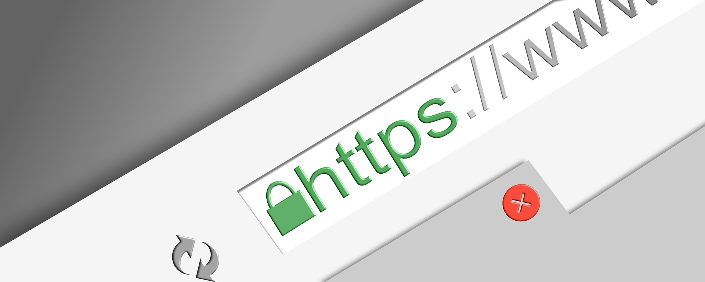

SSL Website Security
Secure Sockets Layer, commonly known as SSL, is a cryptographic protocol that ensures website data is secure and private. In 1999 SSL was replaced by Transport Layer Security, otherwise known as TLS which has the same function a SSL but it’s more of an upgraded version. Encryption involves converting the original representation of the information, called plaintext, into an alternate representation known as ciphertext. Only authorized parties can deceive any encryption back to plaintext. The protection of sensitive information from cyber-theft and hackers is a critical element of web security. Without proactive security measures, businesses risk malware infections, attacks on other websites, networks, and IT infrastructures. Successful attacks can spread from computer to computer, making it difficult to determine the source. This is also bad news for the use of the website as their information can be stolen.
In order to check if a website is secure, you’ll need to do the following:
- Look at the website address. If your website has only “HTTP” it may not be secure. The address needs to have “HTTPS” at the beginning to ensure you have an SSL/TLS certificate for security.
- Do your research on website malware such as phishing kits, malvertising, defacements etc.
- Check if the trust seal is legitimate by clicking on it. It should take you to a different page. Look into the company that is providing the security to ensure the seal authentic.
- Be sure to look for a privacy policy and read it. It should clearly state how they are using your information.
- Look for any contact information which can include social media accounts, a phone number, and an address.